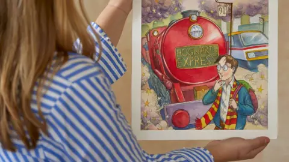
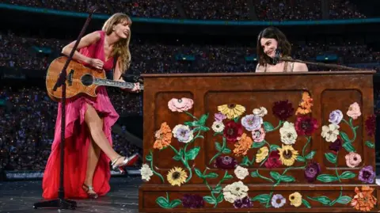

Culture The dance hit that's a British political anthem In 1997, D:Ream's Things Can Only Get Better soundtracked Tony Blair's election campaign. 27 years on, it's back in the headlines. 7 hrs ago Culture The Nigerian queer parties that offer liberation A burgeoning underground ballroom culture offers a safe place for people to express themselves. 17 hrs ago Africa The dance hit that's a British political anthem In 1997, D:Ream's Things Can Only Get Better soundtracked Tony Blair's election campaign. 27 years on, it's back in the headlines. 7 hrs ago Culture The Nigerian queer parties that offer liberation A burgeoning underground ballroom culture offers a safe place for people to express themselves. 17 hrs ago Africa The Bear star on her first time directing the show The cast tell the BBC why people love the show, the stress of filming and what to expect in season three. 11 hrs ago Culture Night at the Museum actor Bill Cobbs dies aged 90 The actor also appeared in The Bodyguard and TV series including The Sopranos and The West Wing. 10 hrs ago US & Canada A Quiet Place: Day One is moving – but sloppy The latest Quiet Place film is a 'beautifully realised' emotional story – but it doesn't match its predecessors for suspense. The Bear star on her first time directing the show The cast tell the BBC why people love the show, the stress of filming and what to expect in season three. 11 hrs ago Culture Night at the Museum actor Bill Cobbs dies aged 90 The actor also appeared in The Bodyguard and TV series including The Sopranos and The West Wing. 10 hrs ago US & Canada Latest from the Glastonbury Festival Glastonbury in pictures: Eavis, lobsters and workouts 2 hrs ago Somerset Moment couple get engaged at Glastonbury Festival 4 hrs ago England Glastonbury's 'mind-blowing' dragonfly unveiled 7 hrs ago Somerset Glastonbury Festival opens with drone art show 8 hrs ago Somerset Glastonbury 2024: Line-up, stage times and schedule 9 hrs ago Culture Watch list 10 of the best TV shows of 2024 so far From a brutal Japanese period epic to a controversial Netflix stalking drama and a hit video game adaptation, we pick the year's greatest programmes to stream right now. See more Ten of the best TV shows to watch this June 4 Jun 2024 Culture Twelve of the best films to watch in June 30 May 2024 Culture Eight of the best films of 2024 so far 28 May 2024 Culture Nine of the best TV shows to watch in May 3 May 2024 Culture More stories  Artwork now most valuable Harry Potter item ever sold The illustration for the first book sold for $1.9m - more than three times the expected price. 14 hrs ago Culture How Sugababes paved the way for pop at Glastonbury The band look back at their Glastonbury history - including the year they shut down the Avalon field. 16 hrs ago Culture Why short shorts are the look of the summer From tiny, thigh-baring shorts – as worn by Paul Mescal – to loose and baggy jorts, there's a style for everyone. 1 day ago Culture Corden wins over most critics with stage return Corden stars alongside Anna Maxwell-Martin in Joe Penhall’s political drama, The Constituent. 1 day ago Culture The brutal true story of the 'Nine Days Queen' A short-lived teenage monarch in Tudor history has now inspired a fantastical TV romp on Prime Video. 1 day ago Culture Kanye and Summer's estate reach copyright settlement The rapper was being sued for using an uncleared sample the 1977 hit I Feel Love on his album. 1 day ago Culture Watch La Haine director Mathieu Kassovitz: Cinema is dying La Haine director Mathieu Kassovitz says Artificial Intelligence is replacing the role of movie makers. 9 hrs ago Film & TV Talking Movies meets Past Lives director Celine Song Song, who was born in South Korea, was Oscar-nominated for Best Picture and Best Original Screenplay. 6 days ago Film & TV How Korean cinema plans to capture new audiences Home to some of the most imaginative storytelling in the world, Korea is taking the next innovative step. 6 days ago Film & TV The celebrity dogs of Cannes Messi has been a big star on the red carpet, eclipsing Meryl Streep. But who will win the Palm Dog this year? 20 May 2024 Film The real story behind Oppenheimer A documentary chronicles the experiences of individuals coping with the aftermath of nuclear testing. 9 Mar 2024 Film & TV The Zone of Interest: A personal visit to Auschwitz A BBC reporter confronts Auschwitz, and his own Jewish ancestry, to take a closer look at an Oscars favourite. 8 Mar 2024 Film & TV 20 Days in Mariupol: The Oscars favourite to win best doc Director Mstyslav Chernov speaks about the challenges of making a film about the early days of the Ukraine war. 7 Mar 2024 Film & TV Dune and the art of creating a fictional language The couple behind the blockbuster's Fremen language speaks about their process. 2 Mar 2024 Film & TV Striking images of women in the Black Panther Party Stephen Shames' photography offers a radically new and candid picture of the militant black power organisation. 23 Feb 2024 Books Inside the world of South Korean male beauty pageants What does it take to be crowned as the most beautiful man in the country? 22 Dec 2023 Style Behind the scenes of Paul Giamatti's new Christmas classic Paul Giamatti gives us an inside look at his new film: The Holdovers. 20 Dec 2023 Film & TV The Lebanese artist championing vegan silk Art critic Alastair Sooke learns about a modern designer's take on Doha's Museum of Islamic Art's collection. 20 Dec 2023 Art & Design What do we mean when we talk about 'Islamic art'? Art critic Alastair Sooke travels to Doha to discover some of the treasures of the Museum of Islamic Art. 19 Dec 2023 Art & Design The Doha Hind: The charming 10th-Century garden ornament Art critic Alastair Sooke learns about a decorative 10th-Century treasure at Doha's Museum of Islamic Art. 19 Dec 2023 Art & Design Blue Quran: A rare 1,000-year-old masterpiece Art critic Alastair Sooke learns about a masterpiece of the Islamic world at Doha's Museum of Islamic Art. 19 Dec 2023 Art & Design Why Doctor Who is the ultimate British show From its humour to its hero, why Doctor Who is so quintessentially British in spirit. 22 Nov 2023 Film & TV Taiwan's last cinema poster painter Partially blind, he vows to continue until he can no longer see. 9 Nov 2023 Art The unexpected power of the humble shoe Writer and academic Shahidha Bari asks why shoes don’t get the credit they deserve. 9 Nov 2023 Style The 102-year-old matriarch who made women feel beautiful Now 102-years-old, Ethel Kerr was once an influential black British fashion and community figure. 9 Nov 2023 Style What your clothes reveal about you Professor Richard Thompson Ford explores what our clothes reveal about us and our society. 9 Nov 2023 Style In History 'I only learnt to know her through her diary' On 25 June 1947, Anne Frank's diary was first published. In this exclusive archive clip, her father tells the BBC about his decision to make her words public. 3 days ago Culture The blacklisted Hollywood writer who won two Oscars He was a 1950s screenwriter who was imprisoned for spreading subversive ideas through his films – yet Dalton Trumbo fought back, going on to write Roman Holiday and Spartacus and winning two Academy Awards. 17 Jun 2024 Culture The men who broke out of Alcatraz with a spoon On 12 June 1962, three men escaped from the notorious Alcatraz prison. While their fate remains unknown, the ingenuity of their escape continues to captivate. 10 Jun 2024 Culture A death-defying D-day mission in a wooden glider Eighty years ago on 6 June, the largest land, air and naval operation in history was unleashed. In 1984, the man who led the mission gave an extraordinary account to the BBC. 3 Jun 2024 Culture How the Sex Pistols sparked outrage in Britain A few months before the song God Save the Queen was banned from its airwaves, the BBC tried to get to the bottom of the chaotic youth movement that challenged the establishment. 27 May 2024 Culture The dark side of a couple's Alaskan wilderness dream In this BBC archive clip from 1962, Alan Whicker meets the adventurous New Jersey couple who chose to tough it out in a new life as homesteaders. 20 May 2024 Culture Watch Taylor Swift fan gifted star's hat at Wembley gig Watch the emotional moment Taylor Swift gave a superfan her hat at London's Wembley Stadium. 1 day ago Watch: Taylor Swift remix played at Changing of the Guard The orchestral version of the song was played to mark the first London dates of Taylor Swift's Eras tour at Wembley. 6 days ago London Inside the derelict rooms where British TV was born Nestled inside Alexandra Palace’s east wing are historic rooms rarely seen by the public. 15 Jun 2024 London MBE a 'wow moment' for BBC presenter Nick Owen BBC Midlands Today presenter is recognised for services to broadcasting and charity. 14 Jun 2024 Birmingham & Black Country LGBTQ+ photo exhibition comes to Tate Modern Zanele Muholi's work features the lives of black LGBTQ+ South Africans. 9 Jun 2024 London On the coastal path near where Michael Mosley was last seen Known for his TV programmes and his Just One Thing podcast which airs on BBC Radio 4, the presenter was last seen on Wednesday. 7 Jun 2024 Europe Homeless artist calls for fairer street licences David Bedford couldn't afford the licence to sell his art on the street until a charity stepped in. 7 Jun 2024 London Behind the scenes with Kathy & Stella in the West End BBC London meet the team behind the murder-mystery musical comedy 'Kathy & Stella Solve A Murder!' 5 Jun 2024 London Bridgerton paves way for diverse stories - actor Banita Sandhu Banita Sandhu says the diversity of Bridgerton is one of the driving forces to its popularity. 1 Jun 2024 Wales 'Overwhelming' support for Britain's Got Talent duo Denise Leigh, from Staffordshire, is hoping with her husband to reach the final of the ITV1 show. 31 May 2024 Stoke & Staffordshire Watch: Coldplay pay tribute to Luton in new song, Orange Chris Martin's Coldplay shared a new song in tribute to Luton where the band were playing. 26 May 2024 Entertainment & Arts Watch: Airport employee informs Nicki Minaj of bag search The American rapper was forced to cancel her gig in Manchester following her arrest at Amsterdam's Schiphol Airport. 26 May 2024 Culture Watch: Raye performs Prada at Big Weekend The record-breaking Brit Award winner was headlining the second day of Radio 1's Big Weekend. 25 May 2024 Entertainment & Arts Danny Boyle's new film shooting on Holy Island The latest production from the Oscar-winning director sees the apocalypse coming to the North East. 24 May 2024 Culture Radio 1's Big Weekend to show film by young poets The young performers say why they are proud of Luton in the short film 24 May 2024 Beds, Herts & Bucks Locals protest Louis Vuitton show in Barcelona park They rallied against the disruption caused by the event and accused organisers of "privatising" public space. 24 May 2024 Europe Inside Elvis Presley's Graceland home in Tennessee The late pop star's house could be auctioned off by a company who claims it was used as collateral in a loan. 21 May 2024 US & Canada Baby Reindeer 'a big problem' for Netflix and Gadd - Morgan Journalist Piers Morgan says there are issues to be addressed by the programme makers. 19 May 2024 Entertainment & Arts Dolly Parton's mum may have been born in Wales Dolly says she has been "tickled pink" about the curiosity surrounding her origins. 17 May 2024 Wales Artist's hospice mosaic inspired by patients Jackie Nash has also helped children develop artistic skills at Primrose Hospice in Bromsgrove. 15 May 2024 Hereford & Worcester More Culture 44 mins ago Weekly quiz: Where did Donald Sutherland's career take off? Test how closely you have been paying attention to what has been going on over the past seven days. 44 mins ago World 2 hrs ago  Little Amal team launch climate change puppet project A herd of life-size puppet animals will travel across Africa and Europe after launching in London. 2 hrs ago London 3 hrs ago Megan Thee Stallion cancels Glasgow show at short notice The singer has rearranged her tour to fit in more American shows, but cancelled her Scottish date. 3 hrs ago Glasgow & West Scotland 7 hrs ago Lucky draw sees six-year-old Swiftie bag tickets Swifties Aria and her mother, Nicole, from Strabane won tickets to a sold-out show in Dublin. 7 hrs ago Northern Ireland 8 hrs ago Toadie quits Neighbours after 30 years on screen The actor joined the soap in 1995 but will now step behind the camera to become a director. 8 hrs ago Australia 8 hrs ago Harry and Meghan painted as royals from history Dan Llywelyn Hall previously painted a portrait Elizabeth II, when he was just 32. 8 hrs ago Wales 9 hrs ago Eras tour guest could knock Swift off top of album chart Gracie Abrams' new album is outselling The Tortured Poets Department 2:1 according to chart data. 9 hrs ago Newsbeat 10 hrs ago Arundhati Roy wins PEN Pinter Prize for 'powerful voice' Roy is a Booker Prize-winning author and has written about human rights issues, and war and capitalism. 10 hrs ago Asia 12 hrs ago Your guide to the NI and Irish artists at Glastonbury Glastonbury kicks off this week with many Northern Irish and Irish artists taking to the stages. 12 hrs ago Northern Ireland